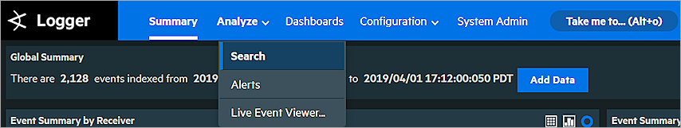

ArcSight Data Platform (formerly called ArcSight Logger) is universal log management software to unify log messages across the enterprise for compliance, regulation, security, IT operations, and log analytics. This document describes the steps to integrate ArcSight Logger with your WatchGuard Firebox so the ArcSight Logger administrator can index Firebox syslog messages.
Platform and Software
The hardware and software used to complete the steps outlined in this document include:
- Firebox with Fireware v12.3 or higher
- HP ArcSight Logger 6.7.0.8242.0 for VMware VM (deployed in VMware ESXi server with an OVA template file provided by HP).
Configuration
To complete this integration, you must first deploy HP ArcSight Logger software.

To set up ArcSight Logger, see the ArcSight Logger Installation Guide. This document describes how to listen, receive, and index syslog data from the Firebox on ArcSight Logger.
Set Up Firebox to Send Syslog Messages to ArcSight Logger
You can configure the Firebox to send syslog messages to ArcSight Logger with Fireware Web UI or Policy Manager. In this document, we use Fireware Web UI.
- Select System > Logging.

- Select the Send log messages to the syslog server at this IP address check box.
- In the IP Address text box, type the IP address of the ArcSight Logger.
- In the Port text box, type the port configured on ArcSight to receive syslog sourced messages.
By default, if ArcSight Logger is installed by a root user, ArcSight listens on UDP port 514 and TCP port 515. If ArcSight Logger is installed by a non-root user, the default UDP port is 8514 and the TCP port is 8515. In this example, syslog messages are sent with UDP in a topology where ArcSight Logger is installed by a root user. - From the Log Format drop-down list, select Syslog.
Set Up HP ArcSight Logger
To configure ArcSight Logger, log in to the Logger UI.
Configure the Receiver
- Select Configuration > Data > Receivers.

A list of predefined receivers appears.

-
In the Name column, click UDP Receiver or click the pen icon to the left of the UDP Receiver name to edit this receiver. You can also click Add to add a new receiver.
By default, port 514 is used for the UDP receiver.

- From the Source Type drop-down list, select syslog.
- Click Save to save the configuration.
Add a Device
After you configure the syslog server settings on the Firebox, it appears on the devices list. You can also add a device manually.
- Select Configuration > Data > Devices.

-
To add a new device, click Add.
The Add Device page appears.If you have not previously added a device, the Add Device page appears automatically.

- In the Name text box, type a descriptive name for the Firebox you want to monitor.
- In the IP Address text box, type the IP address of the Firebox.
- From the Receiver drop-down list, select UDP Receiver.
- Click Save.
Test the Integration
After you add the device, select Summary in the menu bar at the top of the page to see a summary of log messages.
The Event Summary by Receiver pie chart is separated by receivers (the way the log messages were received). In this figure, for example, some log messages are received by a UDP Receiver while others are received by a TCP Receiver. In the Event Summary by Device pie chart, each section represents a device monitored by ArcSight.

To change the pie chart to a column chart or grid view, select the relevant icon in the top-right.
If you select a section of a chart, you see the Details page. For example, in the Event Summary by Device pie chart, if we select the section of the pie chart that represents the Firebox we see the details page shown below.

Search View
You can also select Analyze > Search to see detailed log messages.

Type the filter you want to use for the log message list. For example, to search for all log messages for the Firebox we added in this example, type _deviceGroup in [“T70”] and click Go. All log messages for the Firebox appear as shown in the previous image.
Live Event Viewer
The Live Event Viewer provides a real-time view of incoming events that match the criteria you specify. This functionality is useful in environments where you need to view event quickly.
To use Live Event Viewer:
- Select Analyze > Live Event Viewer.
A search dialog appears with two tabs — Search Composer and Search Results.

- On the Search Composer tab, define the search criteria.
The Search Results tab updates the events in real time.

For example, to monitor all live events from a Firebox:
- Next to Device Groups, click the pen icon.
- Select the Firebox name.
- Click Submit.
- Click Start. The live events collected from the Firebox appear in the Search Results tab.